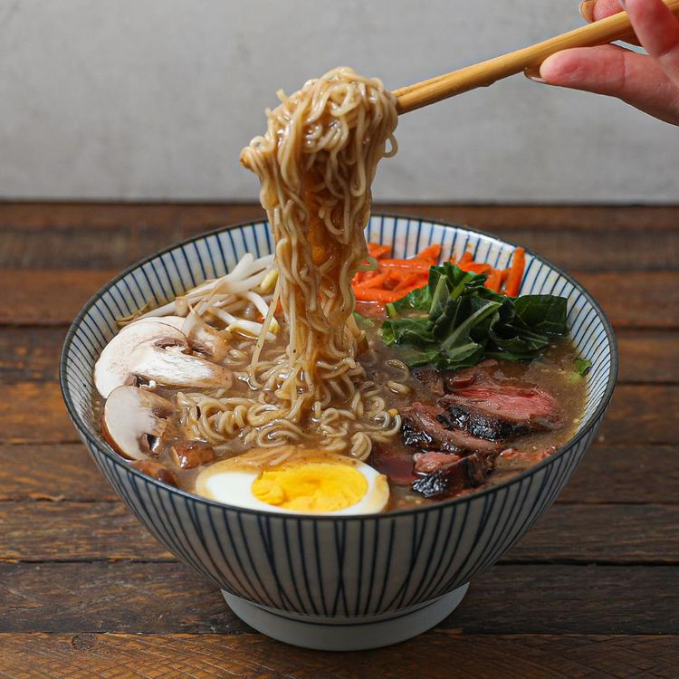

Beef Miso Ramen

This flavorful bowl of ramen in miso broth is full of delicious flavors that will definitely make your palate sing!
If you've been dreaming of Japan, this is the perfect meal for you.
Ingredients
- 1 (8 ounce) beef sirloin steak
- 1/2 cup gluten-free soy sauce (tamari)
- 1 teaspoon coconut oil
- 4 cups beef broth
- 2 teaspoons miso paste
- 1 teaspoon minced garlic
- 1 teaspoon sesame oil
- 2 (3 ounce) packages ramen noodles
- salt and ground black pepper to taste
Steps
- Combine steak and soy sauce in a plastic container with a lid.
- Remove steak from the marinade and shake off excess.
- Heat coconut oil in a skillet over medium-high heat.
- Add steak and cook 3 to 4 minutes per side.
- Remove from skillet and allow to rest for 10 minutes.
- While steak is resting, combine broth, miso paste, garlic, and sesame oil in a saucepan over medium heat.
- Bring to a boil.
- Once broth is at a slow boil, add ramen noodles.
- Cook until noodles are soft, about 3 minutes.
- Season with salt and pepper.
- Transfer broth and noodles to 2 bowls.
- Slice steak and place on top.